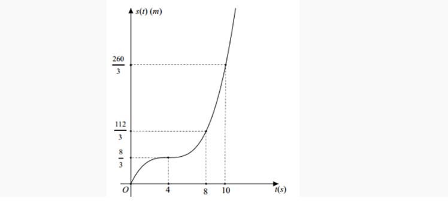
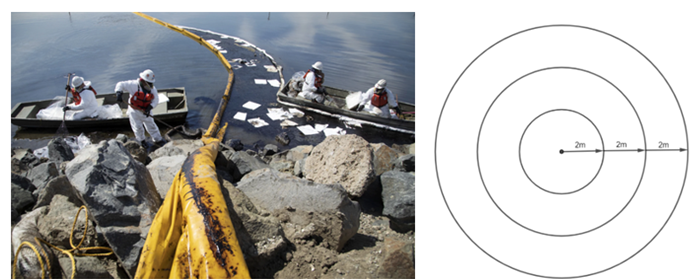
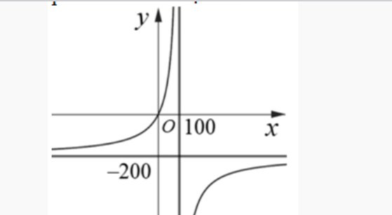

CHUYÊN ĐỀ: ỨNG DỤNG ĐẠO HÀM
Môn Toán - Lớp 12
Câu 1. (THPT Đào Duy Từ - Thanh Hóa 2025) Một vật chuyển động theo quy luật \( s = -t^3 + 18t^2 \), với \( t \) (giây) là khoảng thời gian tính từ lúc vật bắt đầu chuyển động và \( s \) (mét) là quãng đường vật đi được trong thời gian đó. Hỏi trong khoảng thời gian 10 giây, kể từ lúc bắt đầu chuyển động, vận tốc lớn nhất của vật đạt được bằng bao nhiêu (m/s)?
Câu 2. (THPT Lương Tài 2 - Bắc Ninh 2025) Trên một trục số thẳng đứng có chiều dương hướng lên trên, một chất điểm bắt đầu chuyển động dọc theo trục số. Giả sử, tại thời điểm \( t \) giây (\( t \geq 0 \)) tính từ lúc bắt đầu chuyển động thì vị trí \( s(t) \) của chất điểm trên trục số thẳng đứng được xác định bởi công thức \( s(t) = t^3 - 18t^2 + 81t \) (mét). Trong 15 giây chuyển động đầu tiên thì chất điểm di chuyển được quãng đường bằng bao nhiêu mét?
Câu 3. (THPT Nguyễn Đăng Đạo - Bắc Ninh 2025) Một vật chuyển động. Quãng đường \( s(t) \) (tính theo mét) vật đi được sau khoảng thời gian \( t \) (tính theo giây), \( t \geq 0 \), được mô tả là một hàm số bậc ba có đồ thị như hình vẽ dưới đây: 
Hỏi trong 10 giây đầu tiên, khoảng thời gian vật chuyển động nhanh dần kéo dài bao nhiêu giây?
Câu 4. (THPT Gia Bình - Bắc Ninh 2025) Trong 5 giây đầu tiên, một chất điểm chuyển động theo phương trình \( s(t) = t^3 - 3t^2 + 8t + 2 \). Trong đó, \( t \) tính bằng giây và \( s \) tính bằng mét. Chất điểm có vận tốc tức thời nhỏ nhất bằng bao nhiêu m/s trong 5 giây đầu tiên đó?
Câu 5. (THPT Thuận Thành 1&2 - Bắc Ninh 2025) Trong 5 giây đầu tiên, một chất điểm chuyển động theo phương trình \( s(t) = -t^3 + 6t^2 + t + 5 \) trong đó \( t \) tính bằng giây và \( s \) tính bằng mét. Chất điểm có vận tốc tức thời lớn nhất bằng bao nhiêu trong 5 giây đầu tiên đó?
Câu 6. (Chuyên Thái Bình 2025) Một vật chuyển động trên đường thẳng có quãng đường di chuyển trong khoảng thời gian \( t \) (giây) được cho bởi phương trình \( s(t) = -\frac{1}{3}t^3 + 6t^2 \) (\( 0 \leq t \leq 12 \)). Tính từ khi bắt đầu di chuyển đến thời điểm vận tốc của vật đạt giá trị lớn nhất thì vật di chuyển được quãng đường dài bao nhiêu mét (làm tròn đến hàng đơn vị)?
Câu 7. (Cụm trường Nguyễn Hiền - Lê Hồng Phong - Quảng Nam 2025) Ngày khai giảng năm học 2024–2025. Học sinh khối 12 trường THPT Nguyễn Hiền thả chùm bóng bay gắn thông điệp. Ước tính độ cao \( h \) (tính bằng km) của chùm bóng bay so với mặt đất vào thời điểm \( t \) (đơn vị giờ) được cho bởi công thức \( h(t) = -t^3 + 3t^2 \) (\( 0 \leq t \leq 3 \)). Chùm bóng bay đạt độ cao lớn nhất so với mặt đất là: \( a \) (km). Tìm \( a \)?
Câu 8. (Sở Phú Thọ 2025) Trong một trò chơi điện tử, hai bạn Tít và Mít xem ai chạy được quãng đường xa hơn. Tít chạy với vận tốc \( v_T(t) = 5\sqrt[3]{t} \) (km/h), quãng đường Mít chạy được cho bởi phương trình \( s_M(t) = 5t - \frac{5}{2\pi}\sin(2\pi t) \) (km) (với \( t \) là thời gian tính theo giờ). Nếu cuộc đua kết thúc khi Tít hoặc Mít chạy được 10 km đầu tiên thì khoảng cách giữa hai bạn là bao nhiêu kilômét (kết quả làm tròn đến hàng phần trăm)?
Câu 9. (Cụm trường THPT Hải Dương 2025) Ngày khai giảng năm học 2024–2025, học sinh khối 12 trường THPT Thanh Miện thả chùm bóng bay. Ước tính độ cao \( h \) (tính bằng km) của chùm bóng bay so với mặt đất vào thời điểm \( t \) (đơn vị giờ) được cho bởi công thức \( h(t) = -t^3 + 3t^2 \) (\( 0 \leq t \leq 3 \)). Chùm bóng bay đạt độ cao lớn nhất so với mặt đất là \( a \) km. Tìm \( a \).
Câu 10. (Chuyên KHTN Hà Nội 2025) Một máy bay đang bay ở độ cao 10 km so với mặt đất, thu phát tín hiệu qua một ăng-ten ra đa. Khi máy bay cách ra đa 16 km, ra đa phát hiện khoảng cách giữa máy bay và ra đa thay đổi với tốc độ 546 km/h. Tìm vận tốc của máy bay (đơn vị km/h, kết quả làm tròn đến hàng đơn vị).
Câu 11. (Sở Tuyên Quang 2025) Một vật chuyển động theo quy luật \( s = s(t) = \frac{1}{3}t^3 - \frac{3}{2}t^2 + 10t + 2 \) với \( t \geq 0 \) (giây) là khoảng thời gian từ lúc vật bắt đầu chuyển động và \( s \) (mét) là vị trí của vật trong khoảng thời gian đó. Tính quãng đường mà vật đi được khi vận tốc đạt 20 m/s (làm tròn kết quả đến hàng phần chục).
Câu 12. (THPT Hương Hóa - Quảng Trị 2025) Kinh viễn vọng Hubble được tàu không gian Discovery đưa vào sử dụng ngày 24/4/1990. Mô hình vận tốc của tàu trong sứ mệnh này, từ lúc rời bệ phóng (\( t = 0 \) giây) cho đến khi được tên lửa đẩy nhanh khỏi bệ tại thời điểm \( t = 126 \) giây, được xác định bởi công thức \( v(t) = 0,001302t^3 - 0,09029t^2 + 23,61t - 3,083 \) (feet/s). Tính gia tốc lớn nhất của tàu trong khoảng thời gian này (đơn vị: feet/s\(^2\), làm tròn kết quả đến hàng phần chục).

Câu 13. (THPT Hoằng Hóa 2 - Thanh Hóa 2025) Một vật chuyển động theo quy luật \( s(t) = \frac{1}{3}t^3 - \frac{3}{2}t^2 + 10t + 2 \) (với \( t \) (giây) là khoảng thời gian tính từ lúc vật bắt đầu chuyển động và \( s \) (mét) là quãng đường vật đi được trong thời gian đó). Tính quãng đường mà vật đi được khi vận tốc đạt 20 m/s (Kết quả làm tròn đến chữ số thập phân thứ nhất).
Câu 14. (THPT Ngô Sĩ Liên - Bắc Giang 2025) Một chất điểm chuyển động biết quãng đường biểu diễn theo quỹ đạo có phương trình \( s(t) = t^3 - 6t^2 + 30t \) (trong đó quãng đường \( s \) tính bằng mét (m), thời gian \( t \) tính bằng giây (s)). Tìm tốc độ nhỏ nhất của chất điểm (đơn vị (m/s)).
Câu 15. (THPT Quế Võ 1 - Bắc Ninh 2025) Một tên lửa bay vào không trung với quãng đường đi được là \( s(t) \) (km) là hàm phụ thuộc theo biến \( t \) (giây) tuân theo biểu thức sau: \( s(t) = e^{t^2+3} + 2te^{3+1} \) (km). Hỏi vận tốc của tên lửa sau 1 giây là bao nhiêu (biết hàm biểu thị vận tốc là đạo hàm cấp một của hàm biểu thị quãng đường theo thời gian) \( ae^b \) (km/s) tính \( a + 2b \)?
Câu 16. (Sở Hà Tĩnh 2025) Giả sử tỷ lệ sinh của Tỉnh \( A \) tuân theo quy luật logistic được mô hình hóa bằng hàm số \( f(t) = \frac{200}{1 + 4e^{-t}} \); \( t \geq 0, t \in \mathbb{N} \), trong đó thời gian \( t \) được tính bằng tháng. Khi đó đạo hàm \( f'(t) \) sẽ biểu thị tốc độ tăng dân số của tỉnh \( A \). Hỏi sau bao nhiêu tháng tốc độ tăng trưởng của dân số tỉnh \( A \) là lớn nhất?
Câu 17. (THPT Cẩm Xuyên - Hà Tĩnh 2025) Giả sử doanh số (tính bằng số sản phẩm) của một sản phẩm mới (trong vòng một số năm nhất định) tuân theo quy luật logistic được mô hình hoá bằng hàm số \( f(t) = \frac{5000}{1 + 5e^{-t}} \); \( t \geq 0 \) trong đó thời gian \( t \) được tính bằng năm, kể từ khi phát hành sản phẩm mới. Khi đó, đạo hàm \( f'(t) \) sẽ biểu thị tốc độ bán hàng. Hỏi sau khi phát hành thì tốc độ bán hàng đạt lớn nhất bằng bao nhiêu?
Câu 18. (THPT Cẩm Xuyên - Hà Tĩnh 2025) Sau khi phát hiện ra dịch bệnh vi rút Đậu mùa Khi, các chuyên gia y tế ước tính số người nhiễm bệnh kể từ khi xuất hiện bệnh nhân đầu tiên đến ngày thứ \( x \) là \( f(x) = -x^3 + 18x^2 \). Ta xem \( f'(x) \) là tốc độ truyền bệnh tại thời điểm \( x \). Tốc độ truyền bệnh sẽ lớn nhất vào ngày thứ bao nhiêu?
Câu 19. (THPT Lê Thánh Tông - HCM 2025) Anh Nam có một cái ao diện tích \( 50m^2 \) để nuôi cá điều hồng. Vụ vừa qua, anh nuôi với mật độ 40 con/\( m^2 \) và thu được 3 tấn cá thành phẩm. Theo kinh nghiệm nuôi cá của mình anh thấy cứ thả giảm đi 8 con/\( m^2 \) thì mỗi con cá thành phẩm tăng thêm \( 0,5kg \). Để tổng năng suất cao nhất thì vụ tới anh Nam nên mua bao nhiêu cá giống để thả? (giả sử không có hao hụt trong quá trình nuôi)
Câu 20. (Cụm trường THPT Hải Dương 2025) Một đường ống dẫn dầu bị rò rỉ hình thành nên một mảng dầu loang hình tròn trên mặt biển. Tốc độ tăng của bán kính mảng dầu loang theo thời gian là \( 2m/h \). Khi đó tốc độ tăng của diện tích (tính theo \( m^2 \)) của mảng dầu loang cũng phụ thuộc theo thời gian \( t(h) \). Hỏi tại thời điểm bán kính mảng dầu loang là \( 25m \) thì tốc độ tăng diện tích mảng dầu loang theo thời gian là bao nhiêu \( m^2/h \)? (Đáp số làm tròn đến hàng đơn vị)
Câu 21. (Chuyên Lê Khiết - Quảng Ngãi 2025) Để loại bỏ \( x\% \) chất gây ô nhiễm môi trường từ khí thải của một nhà máy, người ta ước tính chi phí (triệu đồng) cần bỏ ra được mô hình hóa bởi hàm số có dạng \( C(x) = \frac{ax + b}{-x + d} \) (\( 0 \leq x < 100 \)). Tính chi phí chênh lệch (tỉ đồng) phải bỏ ra để loại bỏ 90\% và loại bỏ 99\% chất gây ô nhiễm từ khí thải của nhà máy.
Câu 22. (THPT Trực Ninh - Nam Định 2025) Số dân của một thị trấn sau \( t \) năm kể từ năm 1970 được ước tính bởi công thức \( f(t) = \frac{26t + 10}{t + 5} \) là một hàm số xác định trên nửa khoảng \( [0; +\infty) \). Đồ thị hàm số \( y = f(t) \) có đường tiệm cận ngang là \( y = a \). Giá trị của \( a \) là bao nhiêu?
Câu 23. (THPT Lương Tài 2 - Bắc Ninh 2025) Nồng độ \( C \) của một loại hóa chất trong máu sau \( t \) giờ tiêm vào cơ thể được cho bởi công thức \( C(t) = \frac{4t}{64 + t^3} \) với \( t \geq 0 \). Sau khoảng bao nhiêu giờ tiêm thì nồng độ của hóa chất trong máu là cao nhất? (kết quả làm tròn tới hàng phần trăm)
Câu 24. (THPT Nguyễn Khuyến - Lê Thánh Tông 2025) Đường đi của một khinh khí cầu được gắn trong hệ trục tọa độ là một đường cong bậc hai trên bậc nhất có đồ thị cắt trục hoành tại hai điểm có tọa độ là \( (1;0) \) và \( (8;0) \) với đơn vị trên hệ trục tọa độ là 1 (km). Biết rằng điểm cực đại của đồ thị hàm số là điểm \( (6;5) \). Hỏi khi khí cầu đi qua điểm cực đại và cách mặt đất 3875 (m) thì khí cầu cách gốc tọa độ theo phương ngang bao nhiêu? (đơn vị: km)
Câu 25. (THPT Lương Tài 2 - Bắc Ninh 2025) Trong khoảng thời gian từ ngày 01/01/2024 đến hết ngày 30/12/2024 nhóm nghiên cứu đã quan sát sự phát triển của một quần thể sinh vật X. Kết quả nghiên cứu chỉ ra rằng, tại ngày thứ \( t \) của năm 2024 (tính từ ngày 01/01/2024) số cá thể sinh vật X trong quần thể được ước lượng bởi hàm số \( f(t) = -\frac{1}{300}t^3 + bt^2 + ct + 12000 \) (con), \( 0 \leq t \leq 365 \) và ngày 26/09/2024 là ngày có số lượng cá thể sinh vật X nhiều nhất với 55740 con. Ngày 25/11/2024 số lượng cá thể sinh vật X được ước lượng khoảng bao nhiêu nghìn con? (Kết quả làm tròn đến hàng phần chục)
Câu 26. (THPT Tiên Du - Bắc Ninh 2025) Số dân của một thị trấn sau \( t \) năm kể từ năm 2002 được ước tính bởi công thức \( f(t) = \frac{26t + 10}{t + 5} \) (\( f(t) \) được tính bằng nghìn người). Đạo hàm của hàm số \( y = f(t) \) biểu thị tốc độ tăng dân số của thị trấn (tính bằng nghìn người/năm). Hỏi vào năm nào thì tốc độ tăng dân số là 0,075 nghìn người/năm?
Câu 27. (THPT Thạch Thành 1 - Thanh Hóa 2025) Một bể chứa 3000 lít nước tinh khiết. Người ta bơm vào bể đó nước muối có nồng độ 25 gam/1 lít nước với tốc độ 20 lít/phút. Giả sử nồng độ muối trong nước bể sau \( t \) phút được xác định bởi một hàm số \( f(t) \) trên \( t \in [0; +\infty) \) (gam/lít). Khi \( t \) càng lớn thì nồng độ muối trong bể tiến gần đến bao nhiêu gam/lít.
Câu 28. (THPT Thạch Thành 1 - Thanh Hóa 2025) Sau khi phát hiện một bệnh dịch, các chuyên gia y tế ước tính số người nhiễm bệnh kể từ ngày xuất hiện bệnh nhân đầu tiên đến ngày thứ \( t \) là \( f(t) = 45t^2 - t^3 \), \( t = 0,1,2,...,25 \). Nếu coi \( f(t) \) là hàm số xác định trên đoạn \( [0,25] \) thì đạo hàm \( f'(t) \) được xem là tốc độ truyền bệnh (người/ngày) tại thời điểm \( t \). Giả sử khoảng thời gian mà tốc độ truyền bệnh giảm là từ ngày thứ \( m \) đến ngày thứ \( n \). Khi đó \( n-m \) bằng bao nhiêu?
Câu 29. (THPT Yên Lạc - Vĩnh Phúc 2025) Số lượng cá thể của một loài sinh vật phụ thuộc nhiệt độ môi trường sống và được xấp xỉ bởi hàm số \( f(t) = 300e^{\frac{t-3t^2}{100}} \), trong đó \( t \) là nhiệt độ môi trường xét từ \( 0^\circ \) đến \( 60^\circ \). Hỏi số cá thể loài sinh vật trên nhiều nhất là bao nhiêu?
Câu 30. (THPT Nguyễn Viết Xuân - Vĩnh Phúc 2025) Giả sử doanh số (tính bằng số sản phẩm) của một sản phẩm mới (trong vòng một số năm nhất định) tuân theo quy luật logistic được mô hình hoá bằng hàm số \( f(t) = \frac{5000}{1 + 5e^{-t}} \), (\( t \geq 0 \)), trong đó thời gian \( t \) được tính bằng năm kể từ khi phát hành sản phẩm mới. Khi đó đạo hàm \( f'(t) \) biểu thị tốc độ bán hàng. Hỏi sau khi phát hành bao nhiêu năm thì tốc độ bán hàng là lớn nhất? (làm tròn kết quả đến hàng phần chục).
Câu 31. (THPT Thuận Thành 1&2 - Bắc Ninh 2025) Ông Thanh nuôi cá chim ở một ao có diện tích \( 50m^2 \). Vụ trước ông nuôi với mật độ là \( 20 \) con/\( m^2 \) và thu được 1,5 tấn cá. Theo kinh nghiệm nuôi cá của mình thì cứ thả giảm đi 8 con/\( m^2 \) thì mỗi con cá khi thu hoạch tăng lên 0,5kg. Vậy vụ tới ông phải thả bao nhiêu con cá giống để được tổng năng suất khi thu hoạch là cao nhất? (Giả sử không có hao hụt trong quá trình nuôi).
Câu 32. (THPT Lê Xoay - Vĩnh Phúc 2025) Giả sử chiều cao (tính bằng cm) của một giống cây trồng (trong vòng một số tháng nhất định) tuân theo quy luật logistic được mô hình hoá bằng hàm số \( f(t) = \frac{200}{1 + 3e^{-t}} \), \( t \geq 0 \), trong đó thời gian \( t \) được tính bằng tháng kể từ khi hạt bắt đầu nảy mầm. Khi đó đạo hàm \( f'(t) \) sẽ biểu thị tốc độ tăng chiều cao của giống cây đó. Biết rằng kể từ khi hạt giống bắt đầu nảy mầm thì sau \( t \) tháng, tốc độ tăng chiều cao của cây là lớn nhất. Tính \( t \) (làm tròn kết quả đến chữ số thập phân thứ nhất).
Câu 33. (THPT Triệu Quang Phục - Hưng Yên 2025) Một con cá hồi bơi ngược dòng (từ nơi sinh sống) vượt khoảng cách 300km để tới nơi sinh sản. Vận tốc dòng nước là 6km/h. Giả sử vận tốc bơi của cá khi nước đứng yên là \( v \) km/h thì năng lượng tiêu hao của cá trong \( t \) giờ cho bởi công thức \( E(v) = cv^3t \) trong đó \( c \) là hằng số cho trước. \( E \) tính bằng Jun. Tìm vận tốc bơi của cá khi nước đứng yên, để năng lượng của cá tiêu hao ít nhất?
 \[
\text{Khảo sát } E(x) \text{ đạt min tại } x=3 \Rightarrow v = 9 \text{ km/h.}
\]
\[
\text{Khảo sát } E(x) \text{ đạt min tại } x=3 \Rightarrow v = 9 \text{ km/h.}
\]
Câu 34. (Cụm Chương Mỹ - Thanh Oai 2025) Huyết áp là đại lượng để đo độ lớn của lực tác dụng lên thành mạch máu. Nó được đo bằng 2 chỉ số; huyết áp tâm thu (là áp lực của máu lên động mạch khi tim co bóp) và huyết áp tâm trương (là áp lực của máu lên thành động mạch khi tim giãn ra). Giả sử rằng trái tim của một người đập 70 lần một phút, huyết áp riêng \( P \) sau \( t \) giây có thể được mô tả bằng hàm số \( P(t) = 100 + 20\sin\left(\frac{7\pi}{3}t\right) \). Trong thời gian từ 0 giây đến 1 giây, thời điểm \( t = \frac{a}{b} \) (\( a, b \in \mathbb{N}^* \), \( \frac{a}{b} \) tối giản) mà tại đó huyết áp bằng 80 mmHg. Tính \( 2a - b \).
Câu 35. (Cụm Chương Mỹ - Thanh Oai 2025) Một bể chứa ban đầu có 250 lít nước. Sau đó, cứ mỗi phút người ta bơm thêm 25 lít nước, đồng thời cho vào bể 8 gam chất khử khuẩn (\( ClO_2 \)) được hòa tan. Giả sử \( C(t) \) là nồng độ chất khử khuẩn trong bể sau \( t \) phút (với \( C(t) = \frac{m(t)}{V(t)} \), đơn vị gam/lít, trong đó \( m(t) \) là khối lượng chất khử khuẩn trong bể và \( V(t) \) là thể tích nước trong bể). Gọi \( c \) là số dương nhỏ nhất mà nồng độ chất khử khuẩn \( C(t) \) tăng theo thời gian \( t \) nhưng không vượt quá ngưỡng \( c \) gam/lít. Tìm \( c \).
Câu 36. (THPT Hà Trung - Thanh Hóa 2025) Độ giảm huyết áp của một bệnh nhân được cho bởi công thức \( G(x) = 0.035x^2(15 - x) \), trong đó \( x \) là liều lượng thuốc được tiêm cho bệnh nhân (\( x \) được tính bằng miligam). Tính liều lượng thuốc cần tiêm (đơn vị miligam) cho bệnh nhân để huyết áp giảm nhiều nhất.
Câu 37. (Sở Bắc Ninh 2025) Khi loại thuốc A được tiêm vào bệnh nhân, nồng độ (đơn vị: mg/l) của thuốc trong máu sau \( x \) phút (kể từ khi bắt đầu tiêm) được xác định bởi công thức \( C(x) = \frac{30x}{x^2 + 2} \). Để đưa ra lời khuyên và cách xử lí phù hợp cho bệnh nhân, ta cần tìm khoảng thời gian mà nồng độ của thuốc trong máu đang tăng. Trong khoảng thời gian 6 phút sau khi tiêm, nồng độ thuốc trong máu đạt giá trị lớn nhất bằng bao nhiêu mg/l (kết quả được làm tròn đến hàng phần mười)?
Câu 38. (Sở Hải Phòng 2025) Trong Vật lý, một dao động điều hòa là dao động có phương trình chuyển động \( x(t) = A\cos(\omega t + \varphi) \). Giả sử một vật có khối lượng \( m = 100 \)g dao động điều hòa với phương trình chuyển động: \( x = 40\cos\left(200\pi t - \frac{\pi}{3}\right) \) (cm). Khi đó Động năng vật đó đạt giá trị lớn nhất bằng bao nhiêu (J)? (Làm tròn đến hàng phần chục).
Câu 39. (Sở Gia Lai 2025) Biết rằng tốc độ đánh máy trung bình \( S \) (tính bằng từ trên phút) của một học viên lớn tuổi sau \( t \) tuần (kể từ khi chưa biết đánh máy) được cho bởi công thức \( S(t) = \frac{at^2 + b}{ct^2 + d} \) (\( a,b,c,d \in \mathbb{R}; ac \neq 0 \)). Ông A (một người lớn tuổi chưa biết đánh máy) sau 4 tuần đi học thì tốc độ đánh máy trung bình đạt 20 từ trên phút, sau 6 tuần đạt 30 từ trên phút. Em hãy dự đoán xem, sau khóa học 15 tuần thì tốc độ đánh máy trung bình của ông A là bao nhiêu từ trên phút.
Câu 40. (THPT Hương Hóa - Quảng Trị 2025) Một bể ban đầu chứa 150 lít nước. Sau đó, cứ mỗi phút người ta bơm thêm 50 lít nước, đồng thời cho vào bể 20 gam chất khử trùng (hòa tan). Gọi \( f(t) \) (gam/lít) là nồng độ chất khử trùng trong bể sau \( t \) phút (\( t \geq 0 \)), biết rằng sau khi khảo sát sự biến thiên của hàm số \( f(t) \), ta thấy giá trị \( f(t) \) tăng theo thời gian \( t \) nhưng không vượt ngưỡng \( p \) gam/lít. Tìm số \( p \) (kết quả viết dưới dạng số thập phân).
Câu 41. (THPT DTNT - Nghệ An 2025) Mực nước trong hồ chứa của nhà máy điện thủy triều thay đổi trong suốt một ngày do nước chảy ra khi thủy triều xuống và nước chảy vào khi thủy triều lên. Tốc độ thay đổi của mực nước được xác định bởi hàm số \( h'(t) = \frac{1}{90}(t^2 - 17t + 60) \), trong đó \( t \) tính bằng giờ (\( 0 \leq t \leq 24 \)), \( h'(t) \) tính bằng mét/giờ. Tại thời điểm \( t = 0 \), mực nước trong hồ chứa cao 8m. Mực nước trong hồ cao nhất bao nhiêu mét?
Tính tổng điểm
Nhập họ và tên: